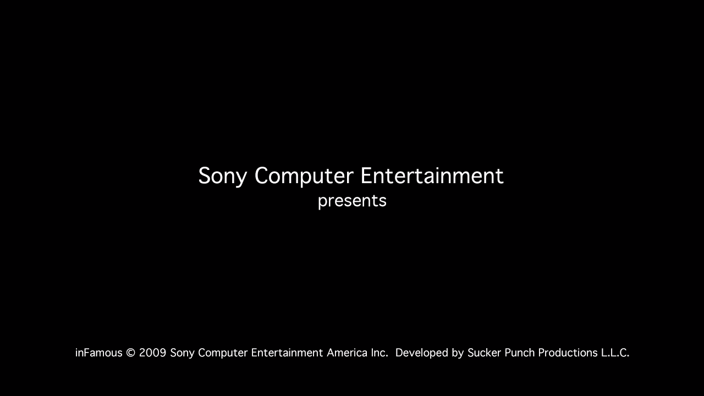
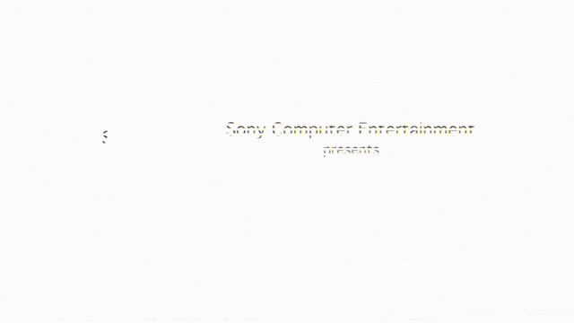
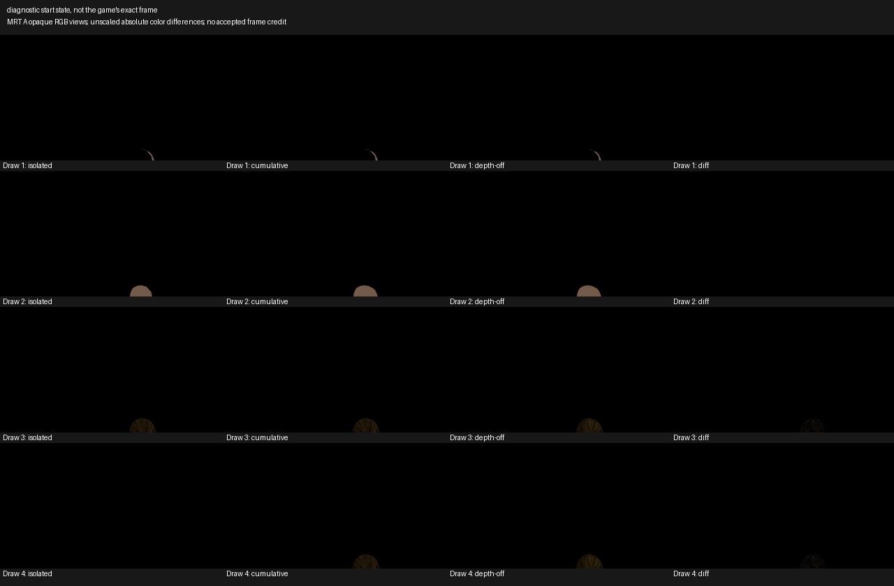

Every number here is backed by evidence. Where it isn't known, it says so.
Status
Decomp foundation
4,073 / 21,054
19.35% proven on main
Proven means checked against the game bytes
Denominator is every function, not a subset
Boot — route 2
In progress
Latest boot measurements
On the movie freeze: a separate PS3 recompilation project working on this same game got past the intro movie. Their public notes credit fixes to wait objects, SPU event queues and SPU thread slots, not audio. We're testing those ideas against our runtime now. We read their notes only, not their code.
Renderer
Sony + Sucker Punch
Splash drawn from the game's own draws
Diagnostic run, not gameplay
Hardware clock and vblank: in progress
Save + hardware
Hardware measured
Cell vrefp table measured on a real PS3
Hardware table, not a guess
Raw private bytes stay private
Pipeline
Retail PPU
RSX FIFO
Intro movie
Clock + vblank
Native present
Meaningful pixels
NEXT: Next: take those missing mip levels from the game's own texture files, byte-matched, never generated. Then replay the frame. That would be our first multi-draw inFAMOUS frame from our own renderer.
Devlog
Renderer: render targets done; 140 of a frame's 536 draws now wait only on real texture mips
Render-target support is in, and checked by a second engine. The renderer now reproduces the game's real setup, with every value decoded from the game's own GPU registers and cited:
Render-target support is in, and checked by a second engine. The renderer now reproduces the game's real setup, with every value decoded from the game's own GPU registers and cited:
drawing to two or three targets at once;
stencil, blending, culling and depth;
the screen clear.
Combined with the shader work, the frame census now reads:
1 draw fully ready;
140 draws blocked only by missing small texture mip levels;
395 still blocked, mostly by texture filtering (271) and some pixel shaders (115).
Next: take those missing mip levels from the game's own texture files, byte-matched, never generated. Then replay the frame. That would be our first multi-draw inFAMOUS frame from our own renderer.
On the movie freeze: a separate PS3 recompilation project working on this same game got past the intro movie. Their public notes credit fixes to wait objects, SPU event queues and SPU thread slots, not audio. We're testing those ideas against our runtime now. We read their notes only, not their code.
Renderer: shader blockers cleared from 412 of a frame's 536 draws; render targets next
Six missing GPU shader instructions are now implemented:
Six missing GPU shader instructions are now implemented:
pixel shaders: "set if greater", log₂, divide-by-square-root;
vertex shaders: sign, reciprocal, log₂.
Draws no longer blocked by shaders: 35 → 412 of 536. 7 more vertex programs and 2 more pixel programs now translate.
Checked by a second engine: it compared every instruction line by line against RPCS3's source and recounted the census itself.
Still unknown: whether the real PS3 GPU matches RPCS3 on edge cases (log of zero, precision). Our research agent Carl is digging into that. Draws that depend on an unclear register-overlap rule are still refused, on purpose.
Render targets: that work has cut render-state refusals from 531 to 0 (0x13 turned out to be a target selector, not a colour format). The GPU side is being finished. After that, textures (missing small mip levels, filtering settings) are the last blockers before a full captured frame.
Fully renderable draws: still 0, until render targets and textures land.
Renderer reality check: 0 of a frame's 536 draws render yet, and now we know exactly why
One real inFAMOUS frame is 536 draw calls. We checked every one against our renderer: none can render today. We've drawn single captured models, not a full frame.
One real inFAMOUS frame is 536 draw calls. We checked every one against our renderer: none can render today. We've drawn single captured models, not a full frame.
What's in the way, by how many draws it blocks:
render-target setup our renderer doesn't support yet (531);
missing smallest mip levels of textures (353);
unimplemented pixel-shader instructions (324; one of them, SGT, alone blocks 265);
texture filtering settings we refuse to guess at (317);
unimplemented vertex-shader instructions (200).
Good news in it: our captured data matches the game byte for byte for the draws we can check. Every blocker is well-defined GPU behaviour, with no guesswork needed.
Now: the missing shader instructions are being implemented, each with a cited source. We'll re-run the same check after each fix, so you can watch "renderable: 0 of 536" climb.
Correction: today's "111 movie frames" is not new progress, and we have no pictures of it
What we wrote earlier today: "the intro movie isn't stuck any more: 111 movie frames drawn in one boot". That was overstated.
What we wrote earlier today: "the intro movie isn't stuck any more: 111 movie frames drawn in one boot". That was overstated.
What was already true yesterday: the boot played the intro movie (instructions 450M–586M, see the Boot Progress Gallery), then froze mid-movie from about 630M.
What was actually measured today: 111 full-screen draw calls, about one every 3.27M instructions, through the game's own GPU draw path. We compared that only against a later run that had stalled on movie frame 3. Yesterday's frames were read straight from the video decoder's memory instead.
We have no images of today's 111 draws. That run had frame capture off. So whether they show the right picture is UNKNOWN.
Next: a run with frame capture on, to see what those draws actually show and whether the movie gets past yesterday's freeze.
Extended probe's first real-PS3 run: 19 sections measured, then our own bug froze it
The volunteer ran the riskier extended probe on their CECH-2001A. The result file is intact (120 MB compressed, checksum matches).
The volunteer ran the riskier extended probe on their CECH-2001A. The result file is intact (120 MB compressed, checksum matches).
All 19 standard sections finished, in just 4 minutes 7 seconds. That's a full second set of real-hardware measurements: vector-math estimates, float rounding, timing, SPU behaviour and more.
Then it hung on the first real-time-clock library call (cellRtcIsLeapYear) in the import-scanner section. That call started but never returned. The probe's 15-minute safety timer saved everything and ended the run, exactly as designed.
Most likely our bug, not the console: the clock library has to be loaded and linked by our own stub generator. We're confirming exactly why before we say so for sure.
What it cost: the last 5 sections (SPURS, graphics/audio, SPU fairness, OS limits, traps) didn't run.
One thing we're taking seriously: after the hard power-off, the console briefly wouldn't boot to the main menu. The volunteer fixed it. We're asking what happened, because nothing ships again until that's understood. The probe only ever writes one new file in a temp folder.
Correction to something we said during the run: we guessed the 15-minute limit was too tight. It wasn't. The first 19 sections only took 4 minutes; the single hung call was the whole problem.
the change merged (632b56b). It closes both bugs that had stopped today's real-PS3 timing model from ever running in a live boot:
the change merged (632b56b). It closes both bugs that had stopped today's real-PS3 timing model from ever running in a live boot:
an import that only worked from the repository root;
the boot driver's outdated list of normal waits .
Today's merges:
: wait-object layout;
: exact float stores and loads;
: exact carry flag;
: live boot fixes.
Now running: the full 600-million-instruction boot with all of them together. We'll compare it with this morning's run, which drew 111 intro-movie frames under the old behaviour.
The 6.1M wall was our boot driver, not the PS3 timing model; fix in CI
What actually happened: one game thread signalled a wait object and woke three higher-priority threads. Per the real-PS3 rule, those three should run first. Our scheduler set that up correctly.
What actually happened: one game thread signalled a wait object and woke three higher-priority threads. Per the real-PS3 rule, those three should run first. Our scheduler set that up correctly.
The bug: the boot driver sitting on top had its own outdated list of "normal" waits. It didn't know about this one, so it treated it as a crash and stopped the run.
The fix: one shared rule that the scheduler, the driver and the native-core path all use. Nothing our code can't model is let through, and the old clock mode behaves exactly as before.
Proof: with the fix, the three threads run, finish their waits, and the original thread then carries on, all in the measured order. The test boot ran cleanly to its limit.
Review: checked by a second engine.
the change carries this and the earlier import fix, and is in CI now.
The full 600M boot is running again with every fix from today. It's the first long run with correct carry flags and real-PS3 thread timing together.
The corrected boot hit a new wall at 6.1M: this afternoon's PS3 timing model, live for the first time
The corrected long boot stopped early, at 6.1 million instructions, on a new wall.
The corrected long boot stopped early, at 6.1 million instructions, on a new wall.
It comes from this afternoon's real-PS3 timing model . That model includes a rule we measured on the volunteer's console: when a thread wakes a higher-priority thread, the woken thread runs first, before the waker's call returns.
What goes wrong: in this boot, the woken thread is never recorded as "done", so the waker waits forever.
Why we're only seeing it now: that code had never run in a real boot. The import crash we fixed an hour ago had been hiding it. It only ran on small hand-written test cases.
This is the project's most common failure: "implemented but not wired". Fixed in code, never reached by the real path.
Next: filed as . An agent is tracing exactly which threads and which call are involved, and testing a fix that keeps the safety refusal for anything we can't model.
Earlier result unchanged: this morning's 600M run used the code from before the timing model, and it drew 111 intro-movie frames.
Carry-flag fix is on main; a second hidden break found and fixed; corrected long boot running
the change merged (b70663d). Every run of our game runtime now sets the PowerPC carry flag exactly as the spec says.
the change merged (b70663d). Every run of our game runtime now sets the PowerPC carry flag exactly as the spec says.
Old saved checkpoints made under the wrong behaviour now refuse to resume, instead of continuing silently.
The native-vs-Python check on the real game binary passes again (6/6).
New tests that don't need the game binary mean our public CI now catches this class of bug.
A second hidden break: when we started the corrected long boot, it crashed before running a single instruction. This afternoon's real-PS3 timing change imports one module in a way that only works from the repository root, and our live boot doesn't run from there. CI never runs the live boot, so it missed this too.
Filed as, fixed with a one-function change.
A new test reproduces the exact live-boot setup. We confirmed it fails on the old code and passes on the new.
A short live boot now runs cleanly.
Now running: the same 600-million-instruction boot as earlier today (which drew 111 intro-movie frames), this time with the correct carry flag. Comparing the two will show whether the wrong flag was changing what the game does.
Float-store fix is on main, with every safety refusal kept
the change merged (06b3e5e). Our CPU code now converts floats to and from single precision exactly as the PowerPC spec says, in all four places it lives: the reference interpreter, the native core, the C interpreter and the code generator.
the change merged (06b3e5e). Our CPU code now converts floats to and from single precision exactly as the PowerPC spec says, in all four places it lives: the reference interpreter, the native core, the C interpreter and the code generator.
It also keeps a NaN's sign through rounding, divides 64-bit integers exactly, and saturates infinity-to-integer conversions.
Where the spec leaves a result undefined, we refuse rather than guess. A case with no hardware measurement behind it stays "unknown".
Checked hard:
520,000+ conversions against an independent spec model: 0 mismatches;
339,000 C-vs-Python cases: all agree;
every proven function that uses these instructions (577 of them): not one result changed.
Next: the carry-flag fix is rebased on top and passes everything locally, including the native-vs-Python check on the real game binary. It goes to CI as soon as main's run finishes.
The intro movie as our boot plays it (GIF, 15 fps, 640 wide)Held frame, identical from ~630M to 764M (mid-movie)

First native render: Sony card

Sony card and Sucker Punch logo (GIF)

First depth-tested 3D draw: captured Zeke head and hair through our renderer, depth on vs off
Got a PS3? Help out
One run of our hardware probe on your console records exactly what the Cell CPU returns for instructions emulators still guess at. Every model helps: fat, slim, super slim. Needs HEN or CFW.